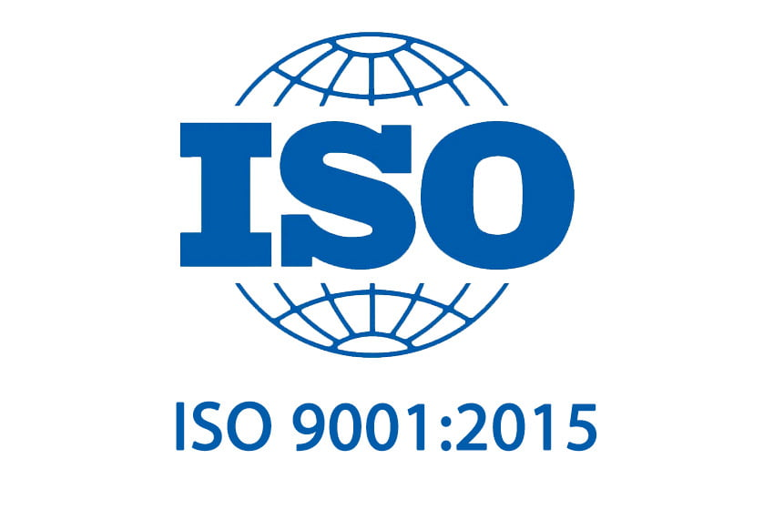

Fundació L'Espiga
Una entitat sense afany de lucre, emprenedora i compromesa, sempre al costat de les persones amb discapacitat i al de les seves famílies.


La nostra raó de ser
Des de Vilafranca del Penedès, i amb presència a altres municipis de l'Alt i el Baix Penedès, treballem cada dia perquè ningú quedi exclòs i perquè totes les persones puguin desenvolupar al màxim les seves capacitats i participar plenament en la societat.
El nostre propòsit és transformar necessitats en accions, crear oportunitats i millorar la qualitat de vida de les persones amb discapacitat. Ho fem mitjançant serveis terapèutics, educatius, ocupacionals, de dia i residencials que promouen l'autonomia personal i la participació en la comunitat.
Creiem en les capacitats de totes les persones i defensem el seu dret a una vida plena, amb oportunitats i reconeixement dins la societat. A la Fundació L'Espiga, cada projecte i cada servei té un objectiu clar: generar impacte positiu en la vida de les persones i contribuir a una comunitat més justa i inclusiva.
La nostra història
Constituïda l'any 1991, inscrita al Registre de Fundacions del Departament de Justícia amb el número 595, la Fundació L'Espiga està subjecta a la Llei Catalana 1/1982, de 3 de març, de fundacions privades.
Des dels seus inicis, a partir d'una antiga escola i d'un centre de paràlisi cerebral, impulsats per famílies, l'entitat ha crescut de manera sostinguda fins a esdevenir una fundació de referència.
Política de Qualitat

Missió
Vetllar per la qualitat de vida de les persones amb discapacitat i de les seves famílies, impulsant la seva atenció, formació, autonomia personal i inclusió social.
Visió
La Fundació L'Espiga vol ser un referent en l'atenció integral a les persones amb discapacitat en tot el seu cicle vital, facilitant-los les eines perquè en la mesura de les seves possibilitats esdevinguin autònoms i puguin participar en els diferents àmbits de la vida quotidiana.
Valors
La Política de Qualitat és la mateixa per a tots els serveis de la Fundació i ha estat revisada per Direcció amb data 15/01/2025.
L'entitat disposa d'un Codi d'Ètica redactat a l'any 2002 amb última revisió al 2024.
També comptem amb un Pla d'Igualtat.
Òrgans de Govern
Patronat
Comissió Executiva
La Comissió Executiva és l'òrgan encarregat, dins de les seves facultats, del govern i representació ordinaris de la Fundació.
El govern i la representació de la Fundació correspon al Patronat i, per delegació d'aquest a la Comissió Executiva, exceptuant les que la Llei i/o els Estatuts situen com a indelegables.
Agraïments
LA FUNDACIÓ L'ESPIGA dona les gràcies a institucions públiques i privades, entitats, empreses, famílies, persones usuàries, professionals, persones voluntàries… que ens han ajudat a arribar fins aquí. A tots us expressem el nostre reconeixement i us animem a seguir col·laborant amb el nostre projecte.